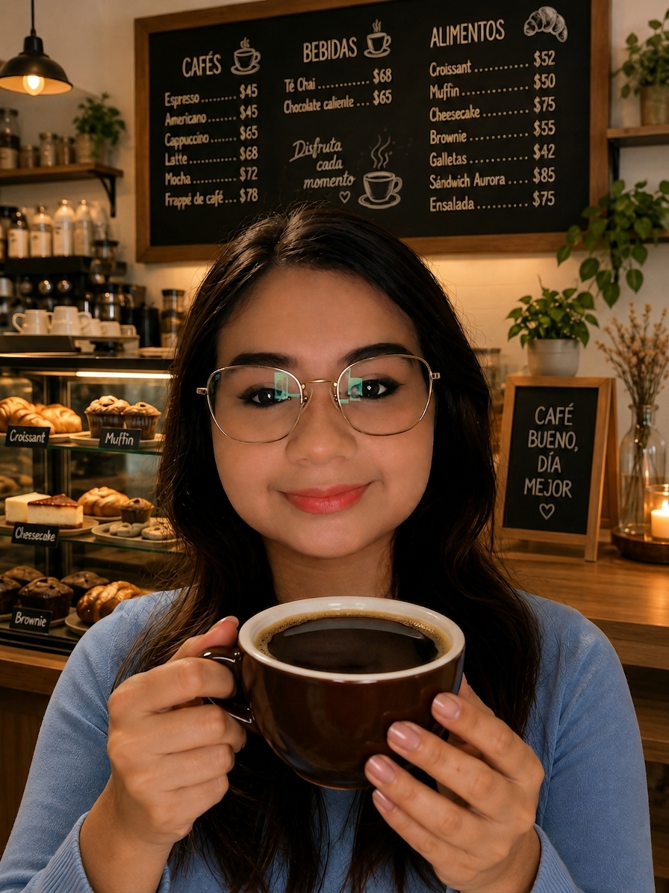
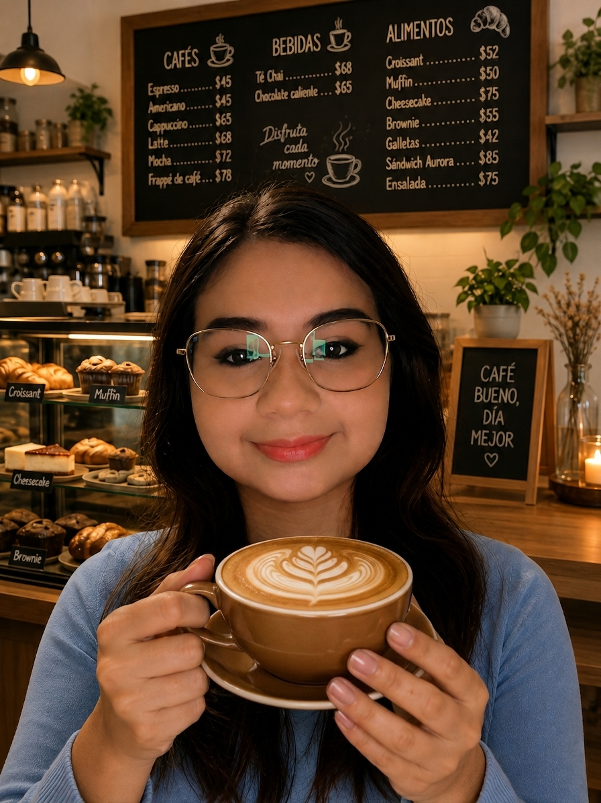
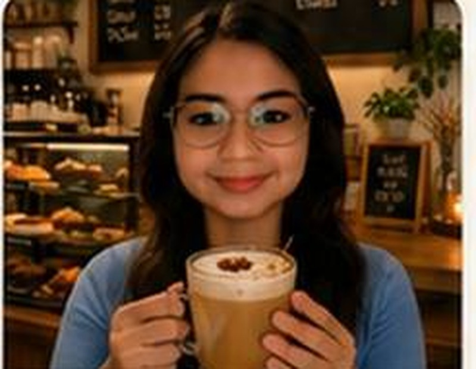
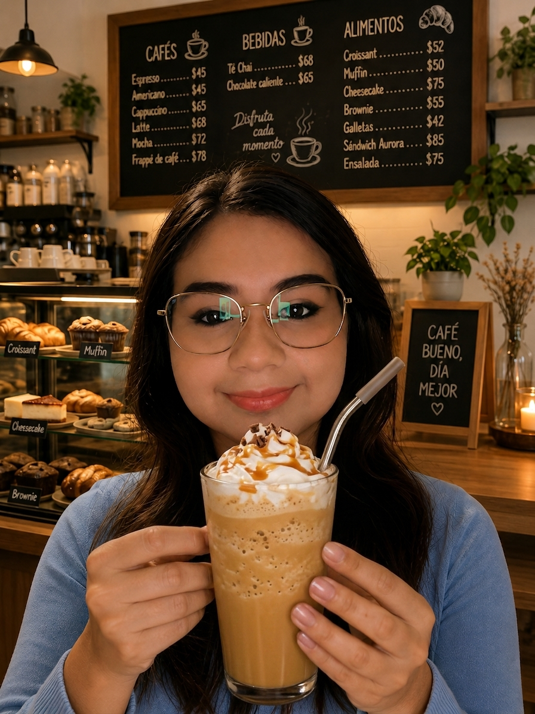

Foto 1
Espresso
Café intenso preparado al momento.
$45 MXNCafé Aurora nació como una cafetería local dedicada a ofrecer café preparado al momento, postres caseros y un espacio tranquilo para estudiar, trabajar o convivir. Su identidad combina un ambiente cálido con productos preparados con atención al detalle.
Ofrecer bebidas y alimentos de calidad en un ambiente cómodo y cercano.
Ser una cafetería reconocida por su servicio, creatividad y experiencia para el cliente.
Sustituye estas tarjetas por fotografías originales tomadas por ti. La práctica no permite imágenes descargadas de Internet.

Producto 2
Producto 3
Producto 4
Producto 6Café americano + rebanada de pastel.
$89 MXNSegundo café americano al 50% de lunes a viernes de 16:00 a 18:00.
Lunes a viernes: 7:00–20:00
Sábado: 8:00–21:00
Domingo: 9:00–18:00